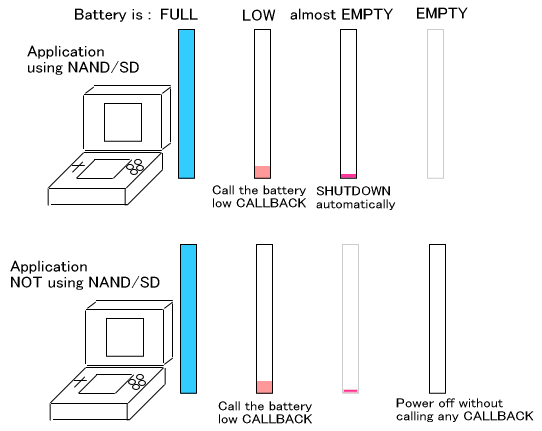

The TWL system runs on a rechargeable battery. This document explains how to get the remaining battery life and describes the callback that is invoked when the remaining battery life drops.
You can find the remaining battery life with the PM_GetBattery and PM_GetBatteryLevel functions.
The PM_GetBattery function can get one of two levels: PM_BATTERY_HIGH and PM_BATTERY_LOW. This function has existed since the NITRO system. On the TWL hardware, it will split the six obtainable levels at a fixed boundary and return one of the two resulting levels.
The PM_GetBatteryLevel function can get one of six levels (0–5). This is a new function that has been created for the TWL system. It cannot be used on NITRO hardware.
You do not need to display a message when low battery is detected. The callback described by Battery LOW Callback below can be called automatically when low battery is detected on the TWL system, so the application does not need to poll the remaining battery life to know when the battery is low.
If there is no remaining battery life, games obviously cannot continue. However, it is not desirable for the power supply to drop when this is not intended by the system; for example, data may be lost if the power is cut off during NAND memory access. As a result, applications that access NAND memory and SD Memory Cards automatically shut down when the remaining battery becomes extremely low, but is not yet depleted, in order to preserve the file system in NAND memory and on the SD Card. Strictly speaking, therefore, the battery cannot be completely used to 0.
On the other hand, applications that only access a DS Game Card and backup memory on the DS Game Card will not lose data if the power supply is suddenly cut off. Automatic shutdown processing is therefore not required for low battery in this case. In other words, you can play until the battery is entirely depleted, as on the Nintendo DS. The battery LOW callback described below can be used to find out when the remaining battery life has become extremely low.

The battery LOW callback is issued when the battery voltage has dropped to a set level. The callback is set by the PM_SetBatteryLowCallback function.
The battery LOW callback is invoked when the remaining battery life is indicated by a value of 1 (roughly 1%) from the PM_GetBatteryLevel function, but with applications not requiring exit processing on rare occasions the callback will not be issued.(See Getting Values Internally and Callback in the PM_GetBatteryLevel function.)
This callback is configured to be invoked at a remaining battery level that is slightly higher than the level at which applications that access NAND memory and SD Cards are automatically shut down.
The battery LOW callback can be used both by applications that shut down automatically and by those that do not.
The PM_GetACAdapter function is used to determine whether power is being supplied through the AC adapter. It actually determines whether the AC adapter is plugged into the DC connector and electricity is flowing. It only determines whether electricity is currently flowing; it is not possible to determine whether the battery is being charged.
2008/09/13 Initial version.
CONFIDENTIAL